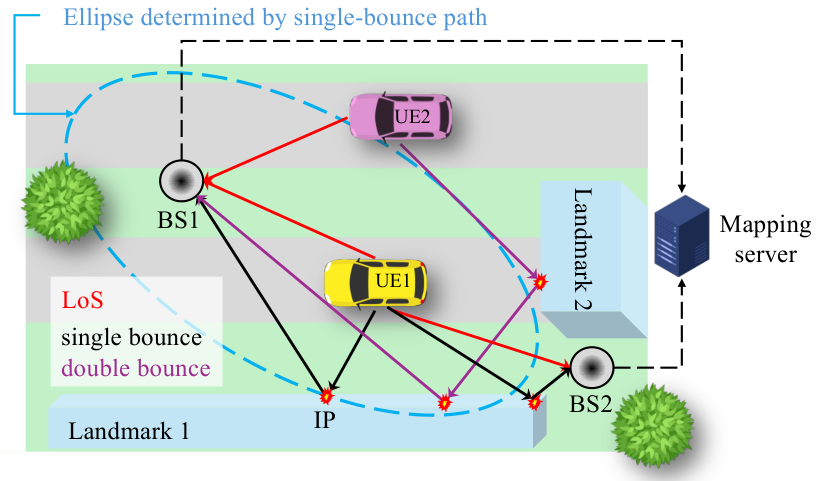
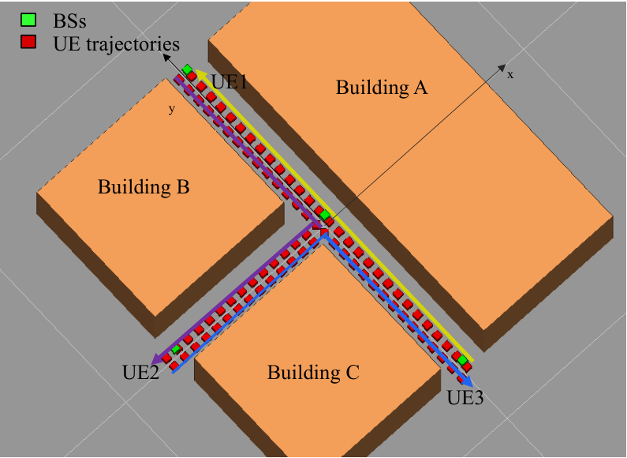
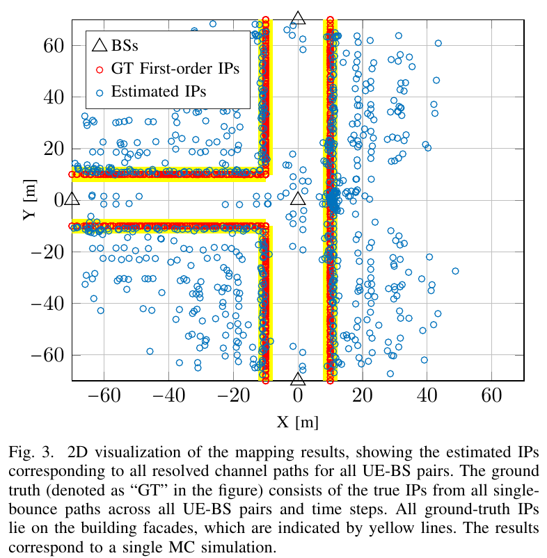
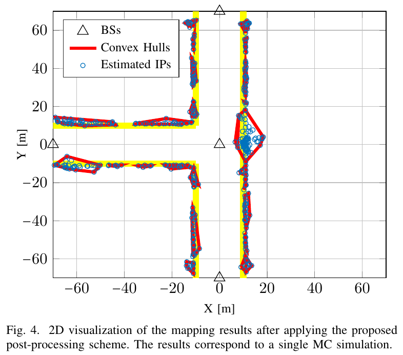

ISAC / RESEARCH NOTE · 001
从导频到环境地图：Pilot-Based 无线定位与建图调研
日期：2026-10-18 ｜ 通信 / 通感 ｜ 论文精读与方法分析 ｜ 修订：补充完整建模、求解公式与原文结果图
1. 研究问题、贡献与证据概览
这篇论文研究的不是“如何训练一个直接输出地图的神经网络”，而是：能否只使用通信链路中的导频，在定位用户的同时，把多径反射点组织成带形状和范围的环境地标，并剔除多次反射形成的虚假结构？ 文中的端到端指从接收信号到位置与地图的完整处理流程。
论文全名为 Pilot-Based End-to-End Radio Positioning and Mapping for ISAC: Beyond Point-Based Landmarks。作者为 Yu Ge、Musa Furkan Keskin、Hui Chen、Ossi Kaltiokallio、Mengting Li、Mikko Valkama、Christos Masouros、Henk Wymeersch；发表于 GLOBECOM 2025，746–751 页，正式 DOI。本报告依据 arXiv v1逐节分析，并核对会议版全文。公式使用统一符号重新整理，括号中的“原文式”标明对应关系；标为“推导”“分析”“建议”的内容由本报告补充。
| 要回答的问题 | 论文的处理 | 实际证据 |
|---|---|---|
| 通信导频怎样变成几何观测？ | 空间增广张量分解，提取时延、方位角与俯仰角 | 在射线追踪生成的信号上运行完整处理链 |
| 多径点怎样变成扩展地标？ | 先恢复入射点，再 DBSCAN 聚类和凸包建模 | 图 4 中的立面轮廓，而不只是散点 |
| 多次反射造成的假点怎样处理？ | 使用用户—点、基站—点的遮挡一致性检验 | 原文图 3/4 的处理前后可视化，及删点比例 |
| 定位达到什么水平？ | 直视路径约束下的最大似然定位 | MAE 0.21 m，95.9% 案例误差小于 1 m |
| 是否优于其他建图算法？ | 未做同条件的外部算法定量对照 | 不能据此声称 SOTA 或固定幅度的精度提升 |
最值得关注的是：地图不只是最后的输出，还被用于检验候选传播路径是否符合环境几何。但其前提是地图初步重建得足够可靠。
2. 详细问题建模：已知量、未知量和测量关系
2.1 场景与状态变量
系统包含多个固定基站 BS 和移动用户 UE。每个 UE 只有一根天线，每个 BS 配备均匀矩形阵列 URA。基站位置和阵列朝向已知；用户位置与环境地标未知。设第 \(p\) 个基站位置为 \(\mathbf b_p\)，姿态为 \(\boldsymbol\psi_p\)；第 \(i\) 个用户在时刻 \(k\) 的位置为 \(\mathbf p_{i,k}\)。
实验中用户在平地移动，高度 \(h_i\) 已知，所以定位只优化水平坐标 \(x,y\)。环境中的第 \(m\) 个扩展地标记为凸集 \(\mathcal H_m\)。要估计的对象是各用户位置以及这些地标的几何边界；“材质”“建筑类别”等语义属性没有在本方法中被识别。

2.2 上行 OFDM 接收信号
为突出一个 BS–UE 链路，暂时省略 \(p,i\) 索引。令 \(\kappa\) 为子载波索引，\(g\) 为 OFDM 符号索引，\(k\) 为快照时刻；原文式（1）可整理成路径求和形式：
其中 \(s_{\kappa,g}\) 为已知恒模导频；\(\rho_k^t\) 为第 \(t\) 条路径的复增益；\(\tau_k^t\) 为传播时延；\(\boldsymbol\theta_k^t=[\theta_{\mathrm{az}},\theta_{\mathrm{el}}]^{\mathsf T}\) 为到达角；\(\Delta f\) 为子载波间隔；\(\boldsymbol\omega\) 为加性白高斯噪声。\(T_k\) 包含直达和所有被考虑的多径，不等于建筑数量：一个建筑可以生成多条路径。
阵列与频率的可分离结构，是后续求解的关键：
\(\otimes\) 为 Kronecker 积，\(d_x,d_z\) 为阵元间距，\(\lambda\) 为波长。直观上，天线间相位变化提供方向信息，子载波间相位变化提供时延信息。论文采用短传输区间，忽略多普勒；通过 RTT 协议假定消除用户与基站间时钟偏移。这些都是模型前提，不能默认在实测中自动成立。
2.3 为什么不能直接把所有多径都变成正确地图？
一条已解析路径提供一个时延和两个角度，共三个标量观测。已知用户位置后，若它确为单次反射，未知反射点为三维位置，几何上可以求解；若发生两次反射，则至少有两个三维交互点，单条路径提供的信息不足以确定它们。多次反射问题在当前观测配置下欠定。
所以论文没有直接恢复多次反射链，而是先把 NLoS 都作为单次反射处理，再利用空间密度和遮挡关系排除不合理解释。这是计算复杂度与建模准确性的取舍，也是错误地图产生的根源。
3. 从原始信号到路径参数：如何转换与求解
3.1 去导频与三阶张量表示
对恒模导频做共轭相乘并归一化，消除已知符号影响；再利用多个 OFDM 符号进行整合。把阵列两维与频率维组织成三阶张量（原文式（2））：
\(\circ\) 表示向量外积，\(S\) 为所用子载波数，\(N_x,N_z\) 为阵列两方向的阵元数。转换后的目标不再是在每个子载波上单独估计信道，而是把观测分解成若干具有方向和时延结构的路径分量。
3.2 空间增广：利用频率维改善可辨识性
直接做 CP 分解可能遇到秩不足和因子相似的问题。论文沿频率维构造带移位结构的增广张量，把频率信息引入两个空间因子（原文式（3）–（4））：
这里对水平因子采用 \(n_x+1\) 项，使其与声明的维度一致；原文式（4b）索引写成 \(n_z+1\)，但维度写成 \(N_x(n_x+1)\)，存在需复现者核对的记号不一致。这不是额外算法创新，而是本文按维度一致性做的整理。空间增广的具体数据重排依赖论文参考文献 [15] 的式（15），本文主文没有展开所有实现细节。
重要的是，增广利用已有数据的结构，并没有增加物理天线或带宽。它可能改善可辨识性，但不能绕过有限信噪比、路径不可分辨或观测不足等物理限制。
3.3 CPD 拟合、时延和角度恢复
对增广张量求秩 \(T_k\) 的 CP 近似（原文式（5））：
这些 \(\mathbf v\) 是分解因子，分解后才用物理结构恢复参数。频率因子满足相邻元素相位差与时延成正比，因此可以用移位不变性得到（原文式（6a））：
\(\mathbf J_1,\mathbf J_2\) 分别选择长度为 \(V-1\) 的前后相邻子向量；\(\mathsf H\) 表示共轭转置。这个相位关系具有周期性，时延解释还需处于所选无模糊范围，不能不加检查地使用相位主值。
随后固定估计时延，对增广阵列导向向量做相关匹配，先恢复俯仰角，再恢复方位角（原文式（6b）–（6c））：
有了时延和角度，再组成路径字典 \(\mathbf B\)，用最小二乘恢复复增益（原文式（7）及其前后文字）：
本阶段输出是每条可解析路径的时延、两个到达角及增益。注意这时还没有判断路径由哪栋建筑产生，也没有证明某路径一定是单次反射。原文称该前端为 ESPRIT-based estimator，但其具体链路包含张量分解、相位提取与角度匹配，不能简化为“只运行一次 ESPRIT”。路径数估计、CPD 初始化与停止阈值、角度搜索分辨率等仍是复现时需要明确的实现项。
4. 从路径参数到用户位置与反射点
4.1 用直视路径做用户定位
论文选择最短的已解析路径作为 LoS。设其观测为 \(\mathbf z=[\widehat\tau,\widehat\theta_{\mathrm{az}},\widehat\theta_{\mathrm{el}}]^{\mathsf T}\)，协方差为 \(\mathbf R\)。已知用户高度后，最大似然定位写成（原文式（8））：
测量函数 \(\mathbf h\) 把候选用户位置映射为预测时延和角度；例如时延分量为 \(\|\mathbf p-\mathbf b\|/c\)，角度由基站局部坐标中的方向确定。\(\mathbf R^{-1}\) 使可靠的观测权重更大；角度残差应注意周期边界。论文采用闭式 LS 初值，再用梯度下降优化。
这里定位与建图是串行求解：先由 LoS 得到用户位置，再用 NLoS 估计环境；并未通过地图反向联合优化用户轨迹。若 LoS 漏检、最短已解析路径其实是反射路径，后续整个地图都可能继承定位偏差。
4.2 单次反射点的几何约束与闭式解
给定用户位置 \(\widehat{\mathbf p}\)、基站 \(\mathbf b\)、从 BS 指向候选点的全局单位方向 \(\mathbf u\)，令单程传播距离为 \(L=c\widehat\tau\)。方向转换需使用阵列姿态与一致的坐标轴约定。候选点写成 \(\mathbf q=\mathbf b+r\mathbf u\)，并满足（原文式（9）–（10）的距离几何）：
等总路程约束在三维中为椭球面，到达方向给出一条射线；求二者交点即可。论文省略闭式推导，本报告补充如下：令 \(\mathbf d=\widehat{\mathbf p}-\mathbf b\)，则
需要检验 \(L\geq\|\mathbf d\|\)、\(0\leq r\leq L\) 及回代残差；分母接近零意味着几何病态，误差会被放大。原文式（9）把距离之和直接写成 \(\tau\)，与前面对时延的定义存在量纲表述需澄清之处；这里显式用 \(L=c\tau\) 保证单位一致。RTT 输入若是往返测距时间，则必须先按协议换算单程距离，不能再机械套用 \(c\tau\)。
4.3 此时得到的是候选 IP，不是真实地图
若路径确为单次反射，闭式解有机会落在真实立面附近；若它经历多次反射，同一个公式也可能给出位于建筑后方或空地中的“合法数值解”。因此代数上满足距离与方向，不等于物理上存在该反射点。下一阶段就是利用候选点的集体结构和可见性进一步筛选。
5. 从反射点到扩展地标：聚类、凸包与遮挡检验
5.1 融合与 DBSCAN：解决未知点源关联
各基站向融合中心发送估计 IP，并形成点集 \(\mathcal D\)。实施遮挡检验时，还需要保留每个点对应的用户和基站位置。物理上来自同一地标的点往往空间邻近，论文用 DBSCAN 建立密度关联：
再用密度可达关系扩展成簇 \(\mathcal L_1,\dots,\mathcal L_C\)，将没有被簇吸收的点视作噪声。它无需预先给定地标个数，但不能保证“一个簇就一定对应一个真实建筑”：相邻表面可能合并，多次反射假点也可能形成高密度簇。实验采用 \(\epsilon=3\,\mathrm m\)、\(N_{\min}=5\)。
5.2 凸包：把离散观测转换成对象边界
对每个簇提取最小凸包（原文式（11））：
这一步把“哪些点相邻”转换为“一个有范围与形状的几何对象”，可以估计表面延伸范围，并支持线段相交检验。凸包计算可用 Quickhull，但凸包天然会填平凹陷；其几何边界由观测覆盖决定，不自动等于建筑的完整实体或真实外轮廓。
5.3 遮挡一致性：排除与初始地图冲突的单次反射解释
对候选点 \(\mathbf q_n\)，构造从对应 BS 和 UE 出发的开线段（原文式（12）–（14））：
只有当两段线都不穿过其他簇的凸包时，才保留该点：
排除点所属簇，避免把正常入射到自身表面的行为误判为遮挡。筛选后再由剩余可见点构建凸包。该判据的物理逻辑是：如果假定它是单次反射点，两段直线路径就应可通行；若必然穿过另一个对象，单次反射解释便不可信。
局限： 这仍是几何启发式，不能证明保留点都是单次反射，也不能证明删除点都是多次反射。初始凸包错误、稀疏观测、可穿透物体或凹形结构，都可能产生误删或漏删。论文实际完成的是清理多次反射造成的地图污染，而不是重建多次反射传播链。
5.4 各阶段输入、变换和输出
| 阶段 | 输入 → 输出 | 解决的子问题 | 主要失败来源 |
|---|---|---|---|
| 信号前端 | 复数导频观测 → 路径时延、到达角、增益 | 从混合波形分离几何观测 | 路径不可分辨、低 SNR、模型阶数错误 |
| 用户定位 | LoS 参数 → 水平位置 | 给 NLoS 建图提供已知焦点 | LoS 缺失或错误识别、基站校准偏差 |
| 单次反射反演 | 用户位置 + 时延角度 → 候选 IP | 恢复每条路径的候选交互位置 | 多次反射模型失配、退化几何 |
| 密度聚类 | 多站多用户 IP → 点簇 | 近似建立观测与地标关联 | 稀疏点误删、相邻地标合并 |
| 凸包与可见性 | 点簇 → 边界 → 筛选后边界 | 表达扩展对象并排除遮挡冲突 | 初始地图错误、凹形和穿透假设失配 |
6. 实验设置、结果原图与对比分析
6.1 实验条件：这些数字在什么环境下成立

| 配置 | 论文取值 |
|---|---|
| 环境与验证方式 | 三栋砖墙建筑组成的 T 形路口，REMCOM Wireless InSite 射线追踪；非硬件实测 |
| 基站 | 4 个；高度 15 m；每站 8×8 阵列；覆盖半径 70 m |
| 用户与采样 | 3 个单天线车辆用户；已知高度 1.5 m；轨迹每 5 m 采样 |
| 链路假设 | 所有活跃 BS–UE 对都有 LoS；最短解析路径用于定位；RTT 假定取消时钟偏移 |
| 波形与射频 | 27.2 GHz；400 MHz 有效带宽；120 kHz 子载波间隔；12 个 OFDM 导频符号 |
| 功率与噪声 | 发射功率 10 dBm；噪声功率谱密度 −174 dBm/Hz；接收机噪声系数 8 dB |
| 路径组成 | 每快照每站保留 50 条传播路径，平均约 9 条单次反射、40 条双次反射 |
| 后处理 | DBSCAN：3 m 邻域、最小点数 5 |
| 统计 | 定位指标综合用户、时间与 100 次 MC；地图图 3、4 为单次 MC 示例 |
宽带与较大阵列为时延、角度估计创造了有利条件。多次反射在输入路径中很多，因此后处理确实面对较强的模型失配；但该环境仍没有覆盖完全无直视定位、动态遮挡或基站校准误差等复杂情况。
6.2 图 3：处理前的点云，正确结构与假点混在一起

读图方式： 三角形是 BS；红圈为真实单次反射 IP；蓝圈为估计 IP；黄色线为建筑立面。靠近黄色线的蓝点已经勾勒出 T 形路口，说明前端与单次反射反演能恢复部分正确几何结构；但大量蓝点落在立面之外，表明把所有路径都按单次反射解释会产生严重污染。DBSCAN 的作用是提取密度结构；遮挡检验进一步处理那些可能形成簇的虚假解释。
原文给出的该示例共 870 个估计 IP，其中 379 个距真实立面不超过 2 m。379/870 ≈ 43.6% 是本报告据原文数量计算的比例，只描述后处理前这批点的近立面比例，不是地标覆盖率，也不是全系统定位准确率。
6.3 图 4：处理后更贴近立面，但仍有缺口与畸变

与图 3 相比，远离立面的散点明显减少，红色凸包将点集转换为可用的边界段。但横向立面上仍有缺口，纵向立面附近也存在局部凸起，说明方法没有恢复连续、无误差的建筑轮廓。原文指出稀疏 IP 可能被 DBSCAN 当作异常点；某些方位角附近的信道估计误差会造成定位和地图畸变。图示中的二维轮廓也不能被解读为已经验证完整三维建筑重建。
6.4 论文真正提供的比较与缺失的指标
| 比较对象/指标 | 处理前或配置 | 处理后或结果 | 能得出的结论 |
|---|---|---|---|
| 用户定位 | LoS 参数 + ML，已知高度与基站状态 | MAE 0.21 m；95.9% 小于 1 m | 支持此仿真条件下较好的定位精度；论文未给出定位算法对照增益 |
| 点云/边界表达 | 图 3，所有已解析路径对应的 IP | 图 4，过滤后的 IP 与凸包 | 从散点变成更接近立面的边界表达 |
| 点删除比例 | 输入估计点 | 删除 43.1% | 表明筛选规模，不能等同于错误点检出率或精度提升率 |
| 距立面 ≤ 2 m 的比例 | 379/870 ≈ 43.6%，由报告计算 | 原文未提供对应处理后比例 | 无法从文中计算前后精确率提升 |
| 地图误差/覆盖 | 未报告 Chamfer、IoU、覆盖率 | 未提供对应统计 | 不能量化形状误差下降或完整度提升 |
| 与外部算法比较 | 无相同输入下的外部基线实验 | 未报告优劣排名 | 文中相关工作比较属于能力/设定对比，不是性能胜出证据 |
| 各后处理步骤贡献 | 未给仅 DBSCAN、仅遮挡等完整消融 | 展示完整后处理结果 | 无法把总改善单独归因于某一模块 |
不要把删点当作精度。 论文未提供删除点的真实标签混淆矩阵，因此 43.1% 是“删了多少”，而非“正确识别多少错误点”。同样，0.21 m 是用户定位 MAE，不是地图表面重建误差；两类任务的精度不能互换。
6.5 与相关研究的能力区别，而非定量胜负
根据论文引言对参考文献 [12]–[14] 的描述：[12]、[13] 支持用户定位与地标建图，并涉及地标类型或局部散射特征；[13] 仍以带小反射区域的 IP 集合表达地标。[14] 用概率框架考虑扩展对象的大小与形状，但该论文所比较的设定限于单用户、单次反射，未完成这里同样的信号到地图处理链。本工作则把多 BS/多 UE 融合、完整导频处理链、扩展几何表达和多次反射污染处理组合起来。
这些区别说明研究定位，并不能证明其在相同数据、相同资源、相同指标下优于 [12]–[14]。后续复现应补上共同场景下的消融和基线，再讨论精度、复杂度与协作开销之间的取舍。
7. 贡献与局限应如何评价
| 观察维度 | 本报告评价 | 下一步需要的证据 |
|---|---|---|
| 流程完整性 | 从信号到几何地图，便于建立模块化复现基线 | 前端、定位、建图的独立误差统计 |
| 地图表达 | 凸包使点集具有范围和边界，便于可见性检测 | 表面距离、轮廓重叠与覆盖完整度 |
| 协作收益 | 多视角有望改善可观测性，但收益需量化 | 固定预算下单/多基站、单/多用户消融 |
| 异常处理 | 几何一致性具有解释性，依赖初始地图质量 | 误删率、漏删率及不同反射阶数分类结果 |
| 部署成熟度 | 更适合视作仿真验证的研究方案 | 实测、校准误差、遮挡变化与端到端延迟 |
直视依赖。 实际街区中的直视缺失、弱直视或漏检会使“最短已解析路径”偏离真实直达路径。一旦用户位置先被估错，建图又会使用该位置形成偏差，系统可能产生自洽却错误的地图。应增加直视检测与定位失败判据。
凸包偏差。 凸包可能跨过凹角、门洞和缺少数据的区域；噪声离群点会把边界向外拉伸。观察到的反射点通常只覆盖可见表面，因此凸包既可能局部填补过多，也可能整体漏掉未观测部分，不能统一解释为真实物体的外包络。
密度参数与采样耦合。 固定的 3 m 邻域阈值不能自动适配不同阵列、距离、车流密度和建筑间距。过大可能合并相邻对象，过小可能把一面墙分裂，稀疏但正确的点也可能被删。更合理的研究方向是按估计不确定性设置距离或采用自适应聚类。
时序与工程开销。 场景随时间采样不等于已经实现概率时序 SLAM。持续运行还涉及地图增量更新、对象消失、动态车辆过滤、历史错误修正和通信负载。论文没有通过运行时间与硬件测量建立实时部署结论。
通信与感知的关系。 复用通信导频是通感研究的一种方式，但不能由此认定已经完成通信速率与感知精度的联合最优设计。若把它扩展为系统方案，还需测量导频开销、链路质量、调度代价和融合带宽。
8. 如何设计有价值的复现
以下为本报告建议，不是论文已经完成的实验。
- 先验证几何求解。 在无噪声单次反射场景恢复已知 IP；检查单位、角度坐标系、旋转方向、退化情况和残差。再加入可控时延与角度误差，量化误差放大。
- 分离前端与后端。 先用理想路径参数测试聚类与遮挡，再用真实估计参数替换，区分传播几何本身与信道估计造成的问题。
- 逐级消融。 对比原始 IP、仅 DBSCAN、DBSCAN 加凸包、完整遮挡剔除。凸包阶段要评估形状，删点阶段要评估分类，避免混用指标。
- 挑战关键假设。 分别降低带宽、减少天线与轨迹密度，加入基站位置/姿态偏差、残余时钟误差、弱直视、完全无直视、凹形建筑和动态遮挡。
- 量化协作代价。 对比 1/2/4 个基站与 1/3/更多用户，并同时记录覆盖、精度、处理延迟及上传字节数。更多观测有收益，也可能增加关联歧义和计算负担。
推荐指标包括：定位误差 CDF 与失效比例；IP 到真实表面的距离；带距离阈值的精确率、召回率；立面覆盖率；对称 Chamfer 距离；表面法向误差；误删/漏删率；每快照运行时间与峰值内存。比较不同点密度时，应控制真值表面的采样方式，避免 Chamfer 指标被采样密度主导。
9. 值得继续研究的方向
优先一：不确定性感知的地图构建。 将前端参数协方差传到 IP，而不是把所有点视作同等可靠；用各向异性距离和稳健表面拟合降低聚类对单一米制阈值的依赖。难点在于估计偏差、路径配对错误通常不满足简单高斯模型。
优先二：地图和路径解释联合更新。 当前几何地图用于检验候选点，进一步可让地图参与路径关联与用户定位，再通过新观测修正地图。需要防止初始错误被反复强化，适合保留多个路径假设并延后硬决策。
优先三：基于信息量选择协作观测。 观测数量不等于几何多样性。可用预期信息增益选择基站、用户轨迹和导频资源，在有限上传与计算预算下补充当前地图最缺乏的视角。
优先四：从规则街区走向实测。 第一阶段可保留已知基站和用户高度，以便定位误差来源；第二阶段再加入阵列校准、协议处理时延、车辆运动、多普勒与动态对象。每增加一类现实因素，都应保留对应的可控对照。
10. 阅读后的判断
这是一篇篇幅紧凑、结构清楚的通感定位建图论文。最有启发的设计，是把扩展几何对象同时作为输出和观测一致性约束。作为后续研究，最值得投入的部分是带不确定性的地图更新、直视缺失时的稳定性以及协作收益的严格量化。
引用时应把“仿真中的定位表现”“示例中的删点比例”“环境轮廓重建”分别陈述。现有证据支持其作为可解释的研究基线，尚不足以支撑任意复杂环境中的完整地图恢复或实时部署能力。
参考资料与版本说明
- Ge, Y. et al. Pilot-Based End-to-End Radio Positioning and Mapping for ISAC: Beyond Point-Based Landmarks. GLOBECOM 2025, pp. 746–751. 正式 DOI。
- arXiv:2505.07402；v1 HTML 全文，用于方法与实验逐节阅读。
- Chalmers 会议版全文，用于核对出版版本及技术内容。
- Aalborg 大学正式出版记录，用于核对会议、页码与作者信息。
本报告为原创解读与评价，未复跑作者算法，未将自拟实验或推导包装为论文结果。图 1–4 来自作者 arXiv v1（2025-05-12），许可为 CC BY-NC-ND 4.0。图 3、4 从该版本 PDF 提取，保留完整图像、坐标、图例和原始图注；只调整网页显示尺寸，未修改图中数据与结论。版权归原作者及相应权利人。